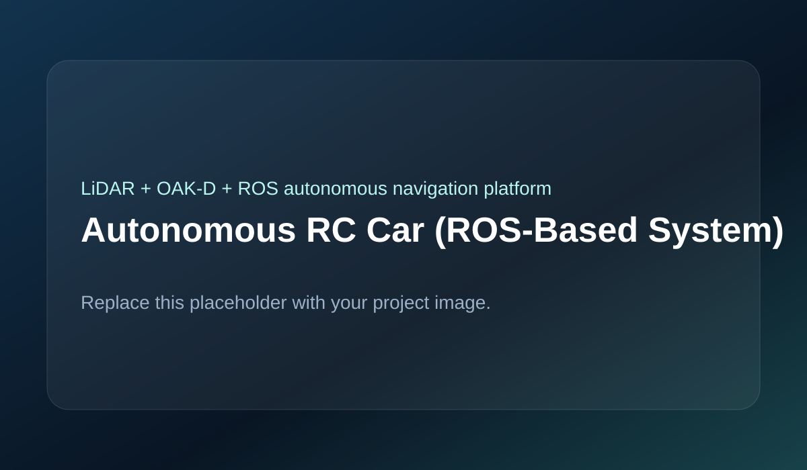

Converted a standard RC car into an autonomous navigation platform for the Unmanned Vehicle System Competition (UVS26), integrating LiDAR, stereo depth sensing, distributed embedded control, and ROS-based navigation.

The system was divided into high-level and low-level control subsystems. A Jetson Orin Nano running ROS processed LiDAR and depth data, executed navigation algorithms, and published steering and velocity commands. A dedicated ESP32 handled steering servo control and ESC throttle control, isolating actuation from perception compute load. The perception stack used a 2D LiDAR for obstacle detection and an OAK-D depth camera for spatial awareness, with ROS nodes structured for modular debugging and tuning.
Follow-the-Gap was selected instead of full SLAM for reactive obstacle avoidance because it offered lower computational cost under competition constraints. High-level and low-level control were separated to reduce motor jitter and improve responsiveness. Steering remapping was calibrated from measured mechanical limits rather than assumed linear response, improving directional accuracy.
Major challenges included steering asymmetry, Pure Pursuit instability from the short wheelbase, oscillation in narrow passages, and latency between perception and actuation. These were addressed through steering calibration, navigation parameter tuning, smoothing filters, and serial/ROS flow optimization.
The final system achieved stable wall following and obstacle avoidance, eliminated steering asymmetry through calibration, reduced oscillation after tuning, and demonstrated full autonomous operation in a competition-style environment.